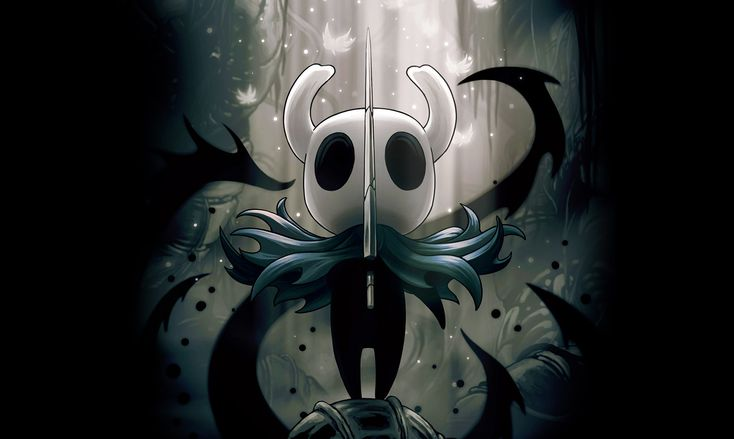
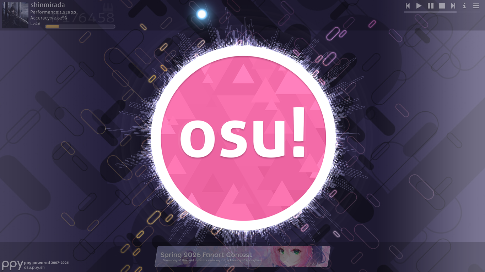

Sobre Mí
Soy Dilan Andrés Bulevas, soy introvertido y estoy creciendo de a poco. Me gustan los momentos tranquilos, los climas lluviosos y las atmósferas que hacen pensar. Esta página es un espacio honesto donde comparto lo que me gusta, sin pretensiones. Aquí hay un poco de quién soy más allá del código.
Mis Gustos
Cosas que me gustan y forman parte de mí:
Mis Juegos
Los juegos que más me han marcado últimamente:

Hollow Knight
Un metroidvania oscuro y melancólico. Exploración, lore profundo y un desafío que engancha. Desde que lo probé me encantó su historia, personajes, mundo, música, etc.
Honkai Impact 3rd
Un juego de acción en tercera persona con mecánicas de combate fluidas y una historia envolvente. Me atrae su gameplay, historia y personajes, aunque esté en inglés me guío por las voces en japonés, pero muy buen juego
Hollow Knight — Mods
Explorando el juego de otra forma con mods de comunidad. Siempre hay algo nuevo que descubrir. Principalmente mods de skins, Chara es la skin que más me gusta, el DLC de la corte pálida entre otros para pasar el rato y disfrutar del juego de otra forma
Date A Live Spirit Echo
Un juego gacha, muy bueno basado en el anime Date A Live, me gusta porque el anime me encanta, es uno de mis favoritos y lo juego por esa misma razón, aunque también por los personajes y las mecánicas de combate, Queen y Kurumi son mis personajes favoritas y las mejores que tengo

osu!
Un juego de ritmo, coordinación y reflejos. Me gusta mucho poder jugar las canciones favoritas mías y otras que hay ahí para retarme. Si no está la canción, yo mismo creo el mapa. Antes era muy principiante, pero poco después creo que soy un jugador bajo-medio. En osu!mania 4k, 6k, 7k y 9k, los niveles más altos que puedo jugar son de 1 estrella hasta 4,1 estrellas máximo en 4k, los demás máximo 3,5 estrellas
Gameplays
Gameplays de mis juegos favoritos.